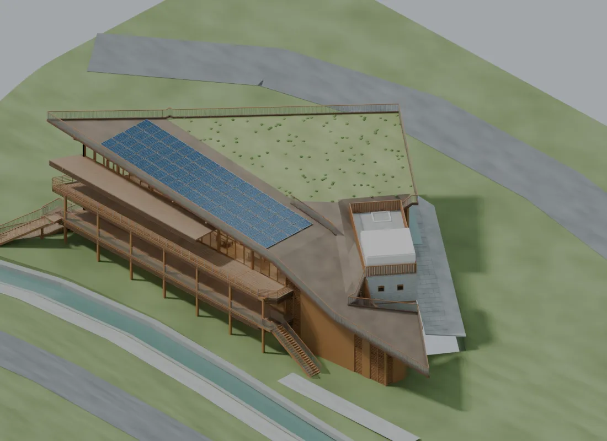
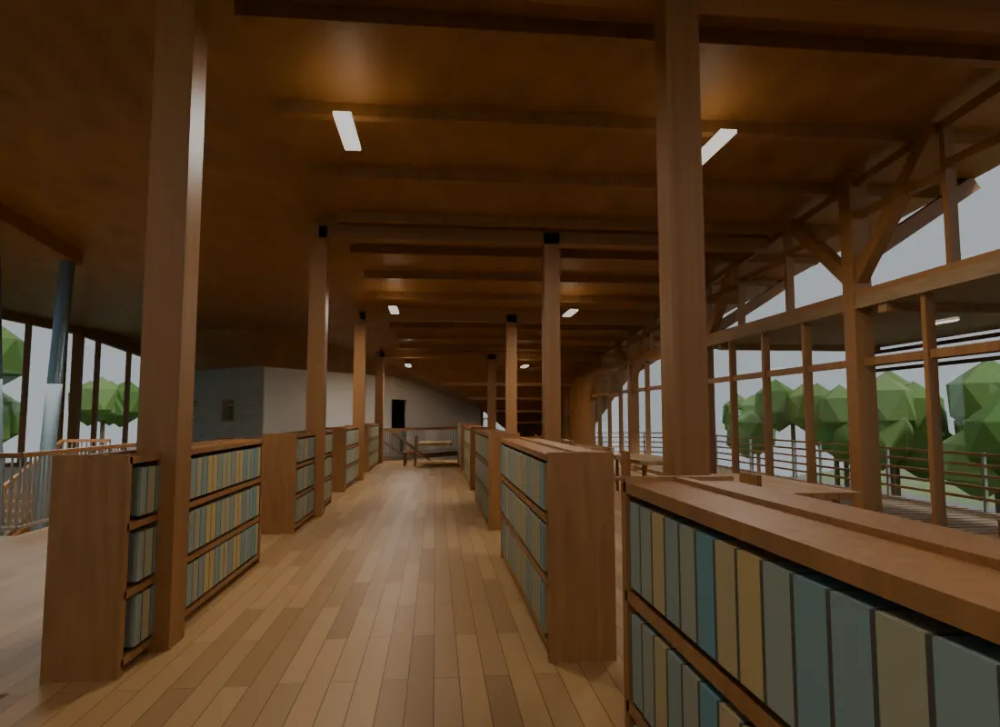
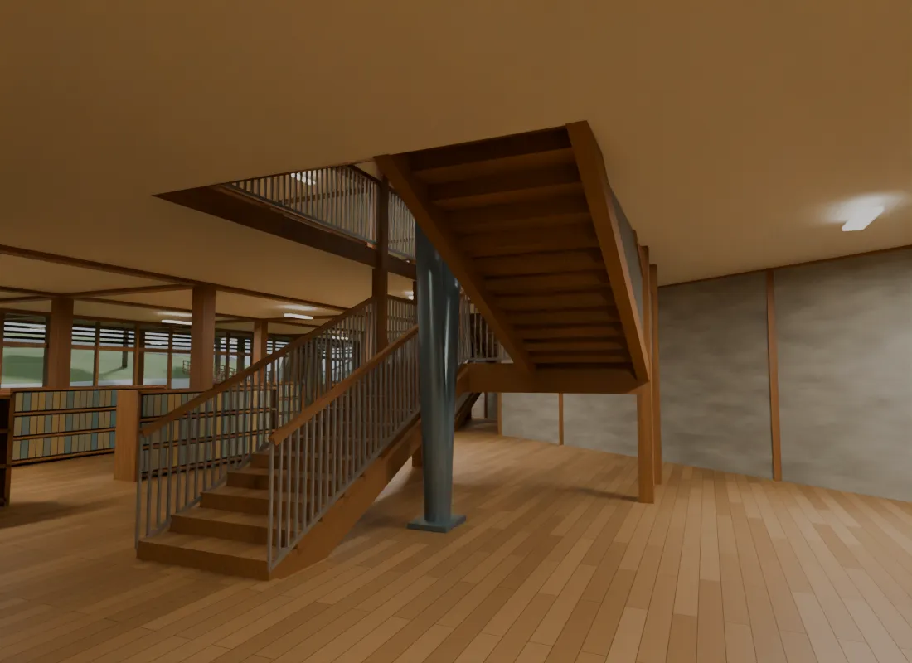

北投圖書館建模測試
一、這個測試在問什麼
給 AI 一棟既有建築、一批公司拍的照片、幾張網路上找得到的圖說，它能不能自己做出一個可以檢視、可以討論的三維模型？而且——使用者不寫規格書，只用建築師平常講話的方式下指示。
兩天做了五個版本。過程中使用者沒有開過 Blender 介面，沒有寫過一行程式，沒有畫過一條線。從交付任務到第五版完成，所有指示加起來 1,627 個字，其中最長的一則 324 字。
二、使用者實際輸入了什麼
以下依時間順序，全部是逐字原文、未經修飾（僅略去安裝軟體、確認檔案位置這類事務性往返）。這是本頁最值得看的部分——它顯示要用 AI 建模，需要的不是新技能，而是把你原本審圖時會講的話講出來。
1 交付任務：給目標與資料來源，不給規格
Astra 因此做了：從公司內網作品庫取得照片、上網查到地址與經緯度、寫腳本建出第一版。整段指示裡沒有任何尺寸、構件清單或交付格式——只有「主要」與「次要」。
2 遇到障礙：指出繞路的方向，不代它解題
Astra 因此做了：桌面自動化被安全檢查擋下後，改去讀那個瀏覽工具的原始碼，看懂它的 API 與搜尋規則，直接取得去重後 92 張照片。
3 第一版不合格：直接說不行，並指出還有什麼資料沒用
Astra 因此做了：保留第一版不動，另存第二版；並自行判斷該從量體重做，而不是在錯的比例上修補。最後一句把技術判斷交還給它。
4 定調精度與順序：什麼可以錯、什麼不能錯、先做哪個
Astra 因此做了：把屋頂平面與航照取 7 個可辨認交點做配準（均方根殘差約 9 像素）；過程中自己發現先前把地圖比例尺讀錯（5 公尺白線是 65 像素，不是原本判讀的 78），主動更正並記錄。「先確定量體再刻細節」這一句決定了後面三個版本的工作順序。
5 第三版：舉一個例子，其餘讓它自己找
Astra 因此做了：讀完該篇報導所附的平面、立面、剖面與牆剖圖說，校正比例後加入木構、窗帶、遮棚、欄杆，並設定木材、玻璃、石材、金屬與光電板材質。
6 第四版：把圖貼上去給它看
Astra 因此做了：依附上的一層平面與 A／B 剖面把樓層標高定為 0／3.60／7.20 公尺，建出挑空、雙跑樓梯（每層 24 階、每階 15 公分）、室內分間與家具；玻璃改為薄壁透射材質；補存全部 92 張原始照片；改用真正的街景模式重新核對基地。
這一則附了兩張截圖——使用者只是把圖貼上去，沒有標註任何尺寸。
7 第五版：像審圖一樣挑毛病，並要求瘦身
Astra 因此做了：對照使用者放進資料夾的 6 張問題截圖逐項修正：主梯改成兩跑加中間平台、屋面改為共用頂點的連續網格、西端柱腳落地並接到簷梁、陽台懸挑梁與屋架梁端補承接。同時把逐本建立的書改為整列書列，物件數 15,527 → 1,528、檔案 7.8 MB → 3.6 MB，而面數只降了約四分之一。
從這七個階段看到的模式
| 使用者做的事 | 原話 |
|---|---|
| 給目標，不給規格 | 「建立建築物本身的模型(主要) 及周邊環境(次要)」——沒有尺寸、沒有構件清單、沒有交付格式。 |
| 指出資料在哪，不代為蒐集 | 「你可以使用 D:\ListDashboard」「隨便找都有平面與立面圖 我只是舉例」。 |
| 定義什麼算對 | 「相對關係 你應該可以看得到 比例不要失真即可」——先講清楚容許誤差，才不會白做。 |
| 規定順序 | 「你要先確定 整個量體 比例是正確的 再來刻這些細節」。 |
| 用建築語彙糾正 | 量體、相對關係、比例失真、剖面關係、破面、梁柱沒有銜接、不合使用常理——都是審圖時會講的話。 |
| 保留每一版 | 「以目前版本 另外再建立一版 這樣之後可以比較差異」。 |
| 把技術判斷交回去 | 「你自己判斷 是修改比較合理 還是重做比較合理」。 |
| 不合格就直說 | 「差太多了」「這樣根本失去看街景的意義」——不需要客氣，但要指出可用而未用的資料。 |
三、線上檢視五個版本
拖曳旋轉，滾輪縮放，右鍵拖曳平移。關閉「屋頂」「地形與周邊」等圖層可以看進室內的樓梯與挑空。切換版本可以直接比較兩天內的演進。線上模型的材質是單色近似，材質表現請看下方渲染圖。
四、五個版本怎麼收斂
| 版本 | 使用者的一句話 | 這一版解決了什麼 | 主要依據 |
|---|---|---|---|
| 第一版 | 建立建築物本身的模型（主要）及周邊環境（次要） | 只靠公司照片推估外觀。輪廓對了，比例不對。 | 照片 |
| 第二版 | 比例不要失真即可；先確定量體再刻細節 | 主體由近矩形改為楔形，屋頂分成三段。修正自己讀錯的地圖比例尺。 | 圖說＋航照 |
| 第三版 | 比例還要校正，增加細節，材質也要設定 | 加入木構、窗帶、遮棚、欄杆與各類材質。 | 報導圖說 |
| 第四版 | 平面、剖面應該足以讓你建立內部空間；玻璃完全不透明 | 依剖面定樓層標高，建出挑空、樓梯、室內分間與家具；玻璃可透視。 | 使用者提供的圖 |
| 第五版 | 破面、欄杆有缺、梁柱沒銜接；每一本書一個物件太多了 | 依 6 張問題截圖逐項合理化：主梯、屋面、柱腳、梁端補齊；同時把過度的細節簡化，模型回到好操作的大小。 | 問題截圖 |
第五版是唯一一次「往回做」的版本。第四版細到每一本書都是獨立元件，模型大到不好操作；第五版把重複的小件合併後，同樣的形體只剩十分之一的元件量，檔案從 7.8 MB 降到 3.6 MB，但外觀與空間沒有變粗糙。這是使用者一句「有些數量太多的物件 可以適當簡化」的結果。
五、渲染輸出
第五版










第四版


第三版與第二版


第一版


六、這個模型能用來做什麼、不能做什麼
| 項目 | 狀態 | 說明 |
|---|---|---|
| 可以拿來做 | V | 量體與空間關係的討論、動線與剖面的檢視、簡報與溝通用的視覺化。 |
| 不能拿來做 | X | 不是實測成果，也不是施工模型。沒有做結構荷重或法規計算，未進行地籍或測量坐標套合。 |
| 有圖面根據的部分 | 圖面標註 | 樓層標高 0／3.60／7.20 公尺，取自使用者提供的 A／B 剖面。平面以相似變換配準，與前一版保留外殼的均方根殘差約 0.81 公尺。 |
| 屬於推估的部分 | 推估 | 地形高程、橋梁位置、未標尺寸構件、家具與周邊量體。第五版的主梯、外部步道與部分梁柱是合理化設計，不是聲稱實景原貌。 |
| 影像年代 | 不一致 | 圖面、照片與街景拍攝年代不同，影像日期不代表現況。 |
| 公司內網照片與地圖截圖 | 未上傳 | 作品庫 92 張原始照片、Google 航照與街景畫面僅保存本機作為建模參考，未進入本網站。本站只放 Blender 自行渲染的輸出。 |
| 線上模型材質 | 簡化 | 程序節點材質無法匯出 glTF，匯出時取各材質節點的代表色填成單色；顏色來自模型自身資料，但木紋、石紋等紋理變化不保留。 |
七、參考來源
- 公司內網作品庫（Portfolio Browser）2003 年北投分館攝影，去重後 92 張。
- 內政部建築研究所《亞熱帶的綠建築挑戰》，印刷頁 82、83：長剖面、一層平面、屋頂平面
- 九典聯合建築師事務所官方作品頁：北投分館
- FAM 準建築人手札：一層平面、東南立面、剖面、牆剖圖說
- 交通部觀光署：臺北市北投區光明路 251 號；121.50637／25.136524；地上二層、地下一層。資料頁
- 臺灣綠建築發展協會：建築面積 802.87 平方公尺；鋼骨、RC 及木構。資料頁
- Google 地圖航照、街景服務與 360 度相片（2018-04、2019-08、2022-07、2025-03）。
建模全程以 Blender 5.2 背景模式執行 Python 腳本完成。每一版都留有建模腳本與驗證腳本，可重新執行重現模型；材質使用內嵌程序節點，模型開啟不依賴外部貼圖。